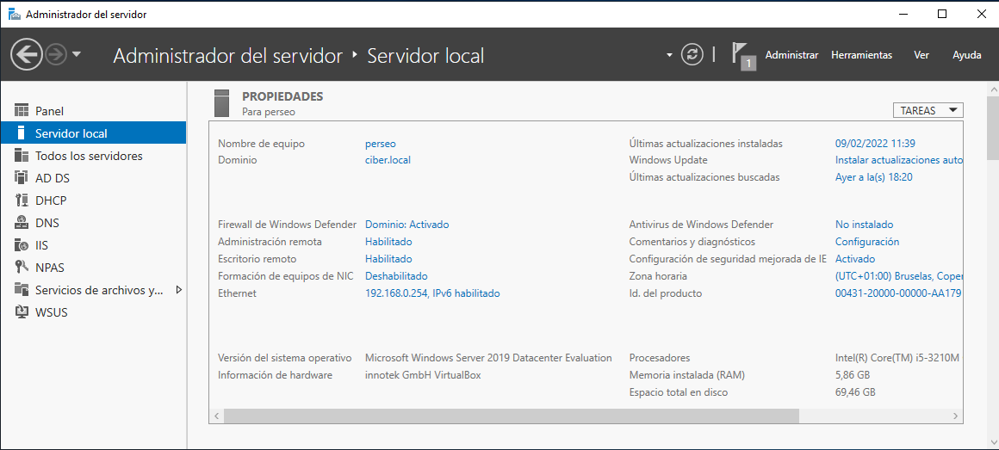

3.3. Servidor RADIUS en Windows Server 2019 para conexiones inalámbricas 802.1X
1. Introducción
En este capítulo se describe cómo configurar un servidor RADIUS en Windows Server 2019 para proporcionar conexiones inalámbricas 802.1X basada en WPA2-Enterpris a través de puntos de acceso inalámbricos.
Para ello, se van a seguir una serie de etapas donde se irán instalando/configurando los componentes necesarios: certificado autofirmado, despliegue del servicio de directivas de red (NPS) como servidor de autenticación remota (RADIUS), etcétera.
Se trata de configurar un servidor RADIUS para redes inalámbricas IEEE 802.11, que es casi lo mismo que para redes cableadas (Ethernet), excepto que el tipo de puerto NAS (tipo de medio utilizado) es IEEE 802.11 inalámbrico en lugar de Ethernet con cable.
IEEE 802.1X es un estándar IEEE para el control de acceso a la red (PNAC) basado en puertos. Es parte del grupo de protocolos de red IEEE 802.1. Proporciona un mecanismo de autenticación a los dispositivos que deseen conectarse a una LAN o WLAN.
Fuente:
2. Escenario
Se parte de un equipo Windows Server 2019 Datacenter cuyo nombre es perseo al cual se le instala el rol de Servicios de dominio Active Directory (AD DS), para configurar un dominio llamado ciber.local. La instalación de este rol, conlleva la instalación del servidor DNS. Adicionalmente, también se instala un servidor DHCP para gestionar los equipos de la misma red de dominio ya que este equipo, será el que proporcione las ip's a los usuarios suplicantes.
|  | |
|
Figura 2. Administrador del servidor. |
Figura 3. Configuración del servidor DHCP. |
Respecto al equipamiento de comunicaciones, se tiene:
- cliente Radius: Se utilizará un router TP-LINK en modo AP y que soporta 802.1x.
- Router WAN: El router que conectará la red LAN con internet es un Technicolor VFH500-T.
 |
 |
| Figura 4. Router TP-LINK en modo AP. | Figura 5. Router Technicolor VFH500-T salida WAN. |
3. Esquema y tabla de equipos
En la siguiente tabla, se detalla las configuraciones a realizar en cada uno de los equipos que intervienen.
| Servidor RADIUS | Cliente W10 | |
| Sistema Operativo | Windows Server 2019 DataCenter | Windows 10 Enterprise |
| Nombre del equipo | perseo | cliente01-W10 |
| Adaptador de Red | Red_NAT - Red Interna | Red_NAT - Red Interna |
| TCP/IP Adaptador de Red |
IP: 192.0.1.254 mask: 255.255.255.0 DNS principal: 127.0.0.1 DNS secundario: 192.168.0.1 Gateway: 192.168.0.1 |
IP: dinámica (172.10.0.5) DNS principal: dinámica Gateway: Dinámica |
| Dominio | ciber.local | |
| Roles y Características |
Servicios de Dominio de AD DNS DHCP NPS |
|
| Usuarios |
cuenta: radiustest password: password123456. |
|
| Grupos |
radius-WPA2: Seguridad y Global Miembros: radiustest |
|
|
Secreto compartido con cliente RADIUS |
eeepsr10 |
Tabla 1. Datos de los equipos que intervienen.
Tabla de equipos de red: Punto de acceso y router para saliar a internet.
| Router Huawei WAN | Cliente RADIUS - AP | |
| Marca/Modelo | Huawei | TP-LINK |
| Adaptador de Red LAN | 192.168.0.1 | 192.168.0.250 |
|
Secreto compartido con servidor RADIUS |
eeepc20 |
Tabla 2. Datos de los equipos de red.
Figura 6. Esquema de la red.
4. Diagrama de etapas
Las etapas ha seguir en el proceso de implantación del sistema es el siguiente:
{kind=link}
Figura 7. Diagrama de etapas.
5. Referencias
Obra publicada con Licencia Creative Commons Reconocimiento No comercial Compartir igual 4.0